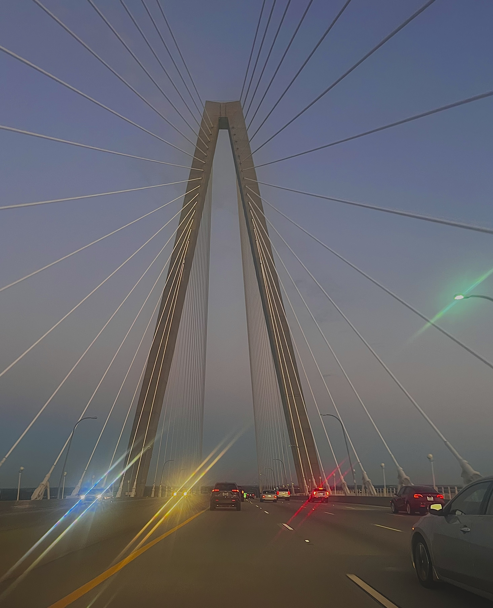

South Carolina is known as the palmetto state. Due to the history of the revolutionary war where they used the palmetto tree to lower the impact of cannonballs on the soldiers' stronghold.
In addition, South Carolina is also known for its beautiful beaches and warm weather, because of this, it is considered as one of the top vacation states in the U.S.
The current population as a whole is 5,118,425 with a household median of $50,570.